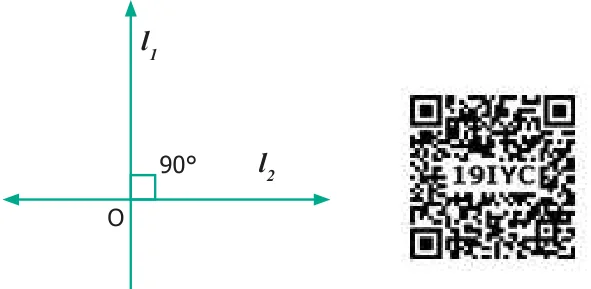

When we have a line, we can mark a point on the line or not on it.
_{A} l_{1} l_{2}
Fig. 4.29
‘A’ is on ‘l_{1}’, ‘B’ is not on ‘l_{1}’ or ‘l_{2}’. ‘B’ may be closer or far away, but not on the both of the lines ‘l_{1}’ and ‘l_{2}’. However, when any two points are given, there is exactly ONE line passing through them! Take several pairs of points and verify if this is true. What about 3 points and a line? Consider the following lines ‘l_{1}’ ‘l_{2}’ ‘l_{3}’ and ‘l_{4}’ and A,B,C be three points.
l_{1} _{A} l_{2}
\(A B l^{3} A B C l^{4} C\)
Fig 4.30
From the above Fig. 4.30, when all the three points lie on the same line, they are called collinear points.
In general, if three or more points lie on the same line, they are called collinear points otherwise non-collinear points.
When two lines intersect at right angle \((90 ^{\circ}\) ), we call it as perpendicular lines. (Refer to 4.31)

ACTIVITY
A book is an object where you can see parallel, perpendicular and intersecting lines.
Suggest atleast 2 more examples having parallel, perpendicular and intersecting lines.
Two intersecting lines cut at a point. Will three lines intersect at one point? Fig.4.32 will help you to answer this.

When many lines intersect at a single point, that is again special, we call that point P as a point of concurrency. The lines are called concurrent lines.

- 1.Observe the diagram and fill in the blanks.

- (i)‘A’, ‘O’ and ‘B’ are _________ points.
- (ii)‘A’, ‘O’ and ‘C’ are _________ points.
- (iii)‘A’, ‘B’ and ‘C’ are _________ points.
- (iv)_________ is the point of concurrency.
- 2.Draw any line and mark any 3 points that are collinear.
- 3.Draw any line and mark any 4 points that are not collinear.
- 4.Draw any 3 lines to have a point of concurrency.
- 5.Draw any 3 lines that are not concurrent. Find the number of
points of intersection.